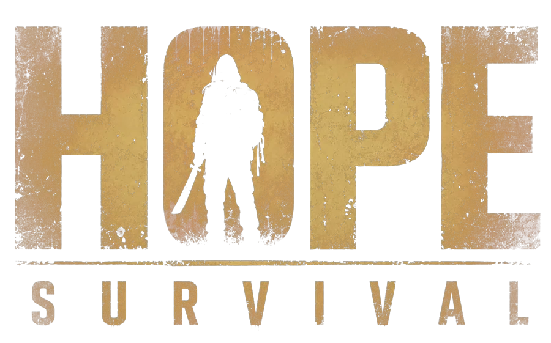

Шум — это приманка
Выстрелы, взрывы, работающие механизмы — заражённые слышат всё. У каждого выстрела своя цена. Брошенный камень — шанс уйти.

Мир сломлен. Человечество угасает. Но надежда ещё жива.
Кооперативное выживание · 1–8 игроков · PC
Официальный трейлер
Остров на карантине. До восьми выживших — или вы один. Обыскивайте, мастерите и превратите базу в последний тёплый огонёк умирающего мира.
Игра
Выстрелы, взрывы, работающие механизмы — заражённые слышат всё. У каждого выстрела своя цена. Брошенный камень — шанс уйти.
Пережили одну орду — следующая будет хуже. Всегда.
Верстаки, печь, добытчики, грядки, ворота, ловушки. Превратите руины в дом — другого безопасного места не осталось.
В одиночку или с семью друзьями. Разделяйтесь на вылазках, собирайтесь для обороны. Погибнете там — встанете одним из них. Со всем снаряжением.
Скриншоты
Вопросы
Да. Орды подстраиваются под размер группы — даже если в ней один человек.
До 8 игроков в онлайн-кооперативе.
Пока не объявили. Добавьте игру в желаемое в Steam и заходите в Discord — узнаете первыми.
PC, в Steam.
Да — в записках, которые вы находите по острову.
Конечно. Скриншоты, GIF, логотип и трейлер — в пресс-ките.

Присоединяйтесь к выжившим
Добавьте в желаемое — Steam напомнит о выходе. В Discord — новости разработки, клипы и с кем сходить на вылазку.